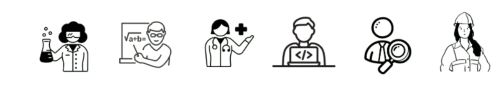

SEU RESULTADO
INVESTIGATIVO – FAZER
Você gosta de estudar e resolver problemas de matemática ou ciências; geralmente evita liderar, vender ou persuadir pessoas. É bom em entender e resolver problemas de ciências e matemática. Valoriza valores científicos, e vê a si mesmo como preciso, científico e intelectual.
- Biólogo
- Químico
- Físico
- Geólogo
- Médico pesquisador
- Farmacêutico
- Bioquímico
- Geneticista
- Estatístico
- Analista de dados
- Matemático
- Engenheiro de software
